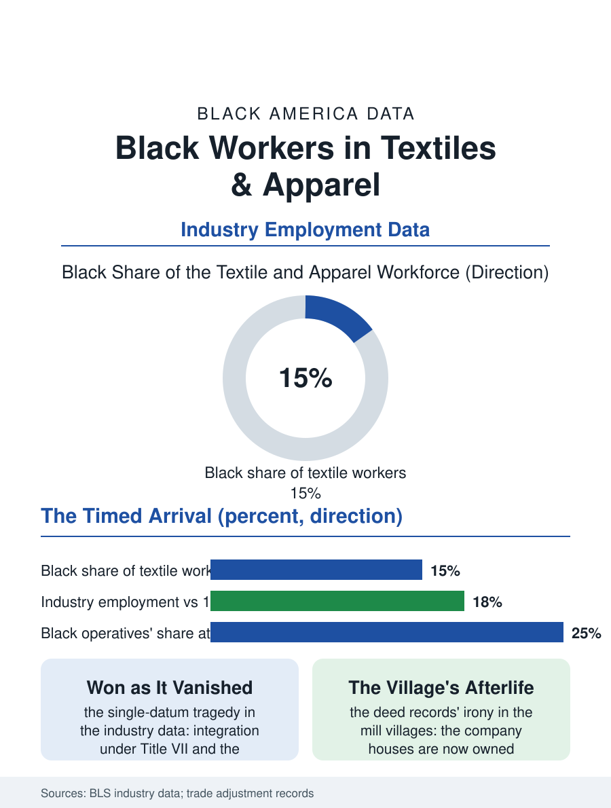

Black Employment
Won as It Vanished: Black Workers in Textiles and Apparel
Black operatives won the mill job in the same years the mills began leaving, the starkest timing parable in the employment files. The textile file.

The textile and apparel industry's Black workforce descends from the mill village's paradox: the Southern mills that industrialized the Piedmont excluded Black workers from the operative jobs for two thirds of the century, then integrated under federal pressure just as the industry began its long flight offshore, so that the Black mill worker's era of full participation was measured in a generation before the looms fell silent. This article reads the textile file.
Excluded, Then Integrated, Then Offshored
The exclusion era's structure is the file's foundation: the Piedmont mill village, the company-owned town around the spinning and weaving sheds, reserved the operative jobs, the industry's family wage, for white workers by explicit practice into the 1960s, confining Black workers to the yards, the janitorial crews, and the opening rooms' dustiest corners, a color line the more galling for the industry's Southern working-class mythology of itself. The integration came by the federal instruments of the era, the defense contracts' conditions and the civil rights law's Title VII, enforced in the landmark mill cases that the legal histories count among the statute's industrial proofs, and through the 1970s the Black share of the operative workforce climbed toward the population share of the mill counties. The timing is the file's tragedy in a single datum: the integration's completion and the offshoring's acceleration are the same years, the industry's employment collapsing from its seventies peak by eighty percent and more as the trade agreements and the container routes moved the looms to the lower-wage world, so that the generation of Black operatives who finally won the mill job held it for the length of one career before the mill itself left, the pension and the retraining programs of the trade adjustment system arriving as the file's unsatisfying severance.
What Remains: The Technical and the Niche
The surviving American textile industry is a different animal in the data: the technical textiles, the automotive and aerospace fabrics, the medical and military textiles of the defense file, produced in automated plants whose smaller workforces are more skilled and, in the Southern plants' current hiring, integrated at the technician tier in the pattern of the modern manufacturing file. The apparel side's remnant, the cut-and-sew of the Los Angeles and New York garment districts, employs an immigrant workforce in which the Black share is small, while the Black apparel tradition's living form is the fashion economy's own, the designers and the sample makers of the fashion files rather than the factory floor. The carpet industry's Georgia concentration, the Dalton file, employs a substantial Black workforce in the tufting plants whose automation curve trails the apparel flight by a generation, the current data showing the same offshoring pressure building at its borders. The union file is the industry's ghost: the textile workers' unions were the labor movement's Southern frontier, their organizing defeats the region's defining labor history, and the integrated era's brief union chapter closed with the plants, leaving the Black textile worker's institutional memory housed in the retiree chapters and the civil rights museums of the mill towns.
The Mill Village's Afterlife
The textile file closes in the mill villages themselves, whose afterlife is the Southern small town's: the mill's shell converted to lofts and breweries in the prospering metros, standing empty in the bypassed ones, the village houses the workers bought from the company in the industry's paternalist phase now the town's affordable stock, owned in substantial part by the Black families the operative line excluded longest, an irony of the deed records the local historians savor. The workforce's descendants are the file's forward data: the mill generation's children, raised on the integrated era's wages, populate the region's service and logistics economies and its colleges in the mobility pattern the manufacturing files record, the one-generation industrial ladder having done its work even as it was withdrawn. The bureau counts the industry's Black workers in the tens of thousands where it once counted the industry itself in the millions. The file's judgment is the era's own arithmetic: the mill job was won at the moment it began to vanish, and the winning and the vanishing together compose the truest single parable in this atlas of how the American economy has handled the Black worker's arrival, the door opening, at last, onto a room already emptying, and the worker, as ever in these pages, making a life in the doorway and beyond it anyway.
More in Black Employment
The Black Unemployment Rate: The Two-to-One Pattern
Black unemployment runs at roughly twice the White rate — 5.5 percent against 3.3 percent in annual averages — a ratio stable across five decades of federal data. How it is measured and why it persists.
Black Median Weekly Earnings: The 80-Cent Ratio
Black full-time workers earn a median of about $900 a week — roughly 80 cents for every dollar White workers earn. The BLS earnings data by group, gender, and occupation.
Black Labor Force Participation: Working at National Rates
Black labor force participation runs at roughly the national rate — and Black women participate at higher rates than White women. The BLS participation data.
Source: Bureau of Labor Statistics industry employment data; U.S. Department of Labor trade adjustment and textile industry histories.